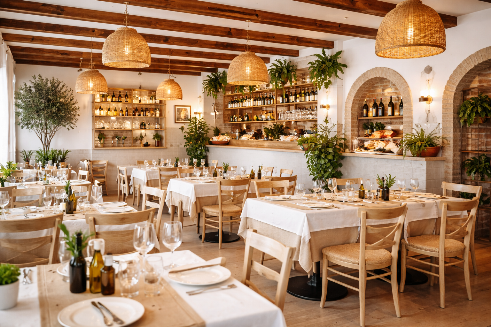
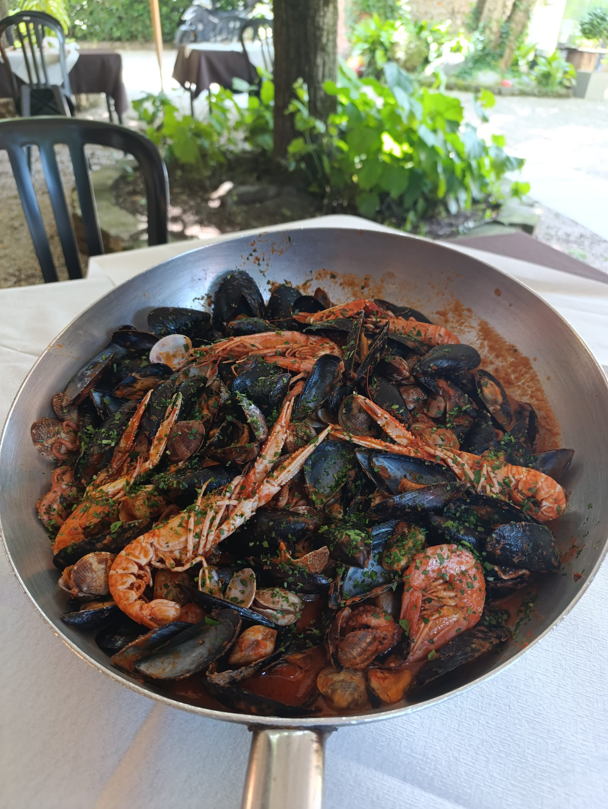

Sapori autentici dal mare e dalla terra
Pizza, pesce, carne e pasta — tutto con passione artigianale

La Bastia nasce dall'esperienza de La Medusa, storico ristorante che per anni ha fatto parlare di sé per la qualità della cucina. Oggi quella stessa passione e quella stessa cura sono arrivate nel cuore di Nogarole Rocca, nel veronese.
Pizze artigianali, carni alla griglia e pasta fatta con cura: una proposta variegata per famiglie, lavoratori e buongustai che non vogliono scendere a compromessi sul gusto.
Un ambiente luminoso e familiare, perfetto per ogni occasione — dal pranzo di lavoro alla cena speciale in famiglia.
Sfoglia il menu
Il piatto simbolo de La Bastia: gli Spaghetti allo Scoglio. Abbondanti, profumati, generosi — proprio come la nostra cucina.
Vedi tutto il menu pesceDa noi si mangia davvero. Quantità abbondanti per soddisfare ogni appetito.
Fatti accogliere da camerieri simpatici e solari, in un posto dove ti senti subito a casa.
Ingredienti selezionati, ricette curate e passione artigianale in ogni piatto che esce dalla cucina.